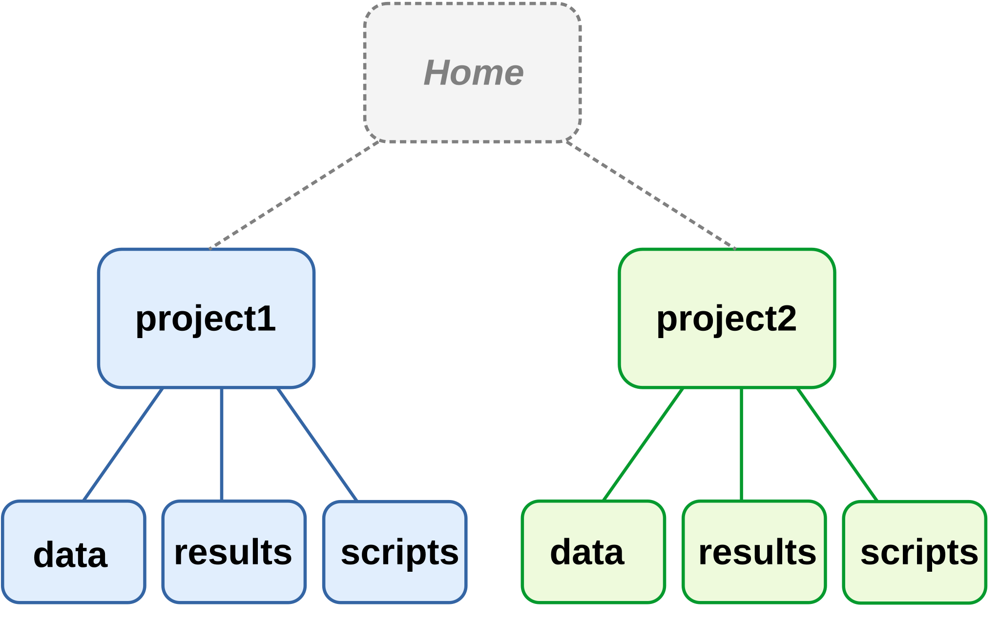
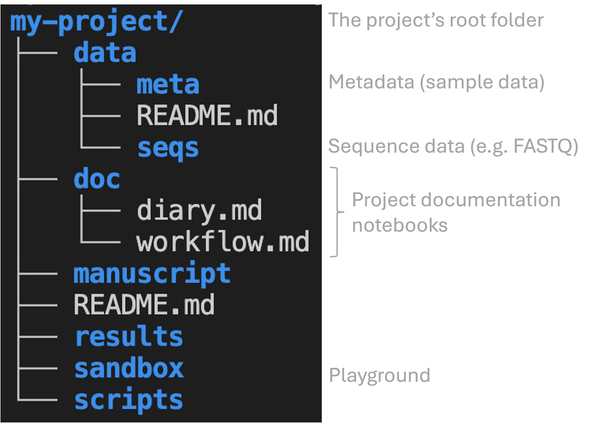
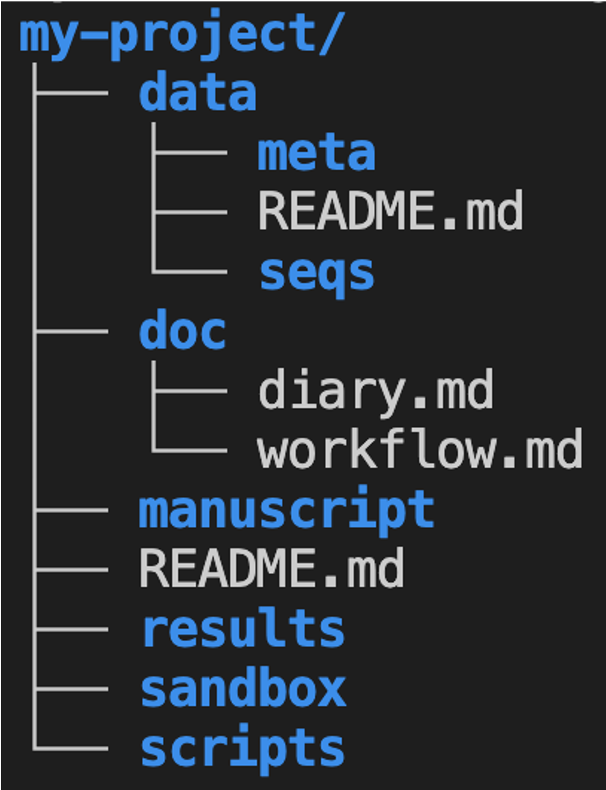

Project file organization
and documentation
for reproducible research
Practical Computing Skills for Omics Data (PLNTPTH 5006)
Jelmer Poelstra
August 31, 2026

Introduction
Learning goals
Learn best practices for:
- Organization and management of your research project files
- Documentation of your research project
Two guiding principles (Noble 2009)
- Someone unfamiliar with your project should be able to look at your computer files and understand in detail what you did and why.
- Everything you do, you will probably have to do over again.
Keep these principles in mind while we discuss the recommendations below!
Why does this matter?
Thoughtful and systematic project documentation and organization:
- Improve the reproducibility of your research
- Facilitate collaboration with others and “your future self”
- Enable automation and effective use of version control (week 5) and agentic AI (week 8)
Why does this matter?
In turn, why does reproducibility matter?
You’ll learn more about this in “Five selfish reasons to work reproducibly” (Markowetz 2015), this week’s reading. We’ll briefly get back to that paper next week in class.
Recommended practices
- Use one folder for one project, with a systematic subfolder structure.
- Never edit your raw data, and avoid editing your results manually.
- Follow file and folder naming practices that favor machine- and human-readability.
- Prefer plain-text file formats.
- Document your project extensively with Markdown files.
We’ll now get into these one by one.
1. Folder structure
1a. Use one folder for one project
Use a separate folder for each project, which should contain:
All files related to that project,
and only those filesSubfolders to cleanly organize your files
This strategy makes it easier to:
- Find files
- Share or back up your entire project
- Avoid deleting files by accident

Two project folder hierarchies. Each box is a folder.
1b. Separate files using a systematic structure
Use subfolders to keep different kinds of files separate, such as:
- Code
- Data
- Results
Multiple reasonable ways exist to organize and name your project folders.
Use what works for you while keeping in mind these principles, and apply it consistently.
For example:

1b. Separate files using a systematic structure
Where would you put each file?
Using the folder structure from the previous slide:
- The FASTQ (sequence) files you got back from the sequencing facility
- A spreadsheet listing your sample IDs and collection dates
- A figure you made for a paper
- The code you wrote to make that figure

2. Editing data and results
2a. Avoid editing original data
Raw data files should not be edited once produced.
Any processing or correction of the data should be done on separate copies.
What if you need to add data to a file that is being updated over time?
If you are entering data piecemeal e.g. during a longer experiment, consider using separate files for each batch of data. At the very least, don’t combine directly entered data with data analysis or visualization in a single spreadsheet — the less you touch the raw data files, the better.
2b. Avoid manually editing results
Avoid manually editing files with (intermediate) results — do this with code instead.
As Abdill et al. (2024) explain (my bolding):
For example, if script A processes raw data into a table of gene expression levels, and script B summarizes this table by pathway, we should be concerned if there is a step after script A that requires a user to open the table and edit fields by hand to prepare the data for script B. Such quick fixes can be tempting, but they also add risk: A researcher could easily add a typo, corrupt a file in unexpected ways, or forget the step altogether.
Doing this with code has several advantages:
- Can be easily included as part of your project workflow, and is therefore reproducible.
- Can be easily repeated if needed. Recall Noble (2009): “Everything you do, you will probably have to do over again.”
2c. Treatment of data versus results
Raw data
- Read-only — never edit the originals.
- Highly valuable — make backups.
Results
- Generally disposable, since you should be able to regenerate them.
There is some nuance here, as some results may take many hours to regenerate.
3. File naming
3. Use best practices for file naming
Three key principles (from Jenny Bryan ) — file names should:
- Be machine-readable
- Be human-readable
- Enable correct default alphanumeric sorting
3a. Use machine-readable names
Don’t use spaces in file names.
Limit special characters to underscores (_), hyphens (-), and periods (.).
- Where appropriate, include metadata like sample ID, date, and treatment:
sample032_2016-05-03_low.txtsamples_soil_treatment-a_2019-01.txt
3b. Use human-readable names
“Name all files to reflect their content or function. For example, use names such as
bird_count_table.csv,manuscript.md, orsightings_analysis.py.” (Wilson et al. 2017)
One good scheme:
- Use underscores (_) to delimit units like sample ID, batch, treatment, date.
- Use hyphens (-) to delimit words within a unit:
grass-and-soil. - Limit periods (.) to file extensions.
- Generally avoid capital letters (though standard conventions such as
R1/R2are fine).
3c. Use names that sort correctly
Write dates in the format YYYY-MM-DD (e.g., 2026-08-31) — this sorts correctly and is unambiguous.
Sorting with the M/D/YY format:
What problems are you seeing?
The answer will be added after the lecture.
3c. Use names that sort correctly
Use leading zeros — for example, sample05 instead of sample5.
How many digits?
Choose the number of digits based on how many samples (or other items) you expect to have. For example, if you may get 100 or more samples, use three digits: sample001, sample002, …, sample999.
3c. Use names that sort correctly
Optional, and when it makes sense: group similar files by prefix, and/or number files in order.
A numbering example:
3. Your turn
How many problems can you find in this file name?
Final Results May 3 2016 (2).xlsx
The answer will be added after the lecture.
4. Plain-text files
4. Use plain-text files
Which of these are plain-text formats, and which are not?
- Plain text:
.txt,.csv— not plain text:.R,.xlsx,.pdf - Plain text:
.txt,.csv,.R— not plain text:.xlsx,.pdf - Plain text:
.txt,.csv,.R,.pdf— not plain text:.xlsx - Plain text:
.txt,.R— not plain text:.csv,.xlsx,.pdf
Click for hints about .csv and .R files
.csvstands for “comma-separated values”, a tabular format with columns separated by commas..Rfiles are “R scripts”: files containing code written in the R programming language.
4. Use plain-text files
What are plain-text files?
Plain-text files:
- Contain only readable characters with no hidden formatting or binary encoding
- Can be opened and edited with any basic text editor, including in a terminal
In this course, you’ll use Markdown (.md) files — a nice balance between ease of writing/reading and formatting options. More on this later this week!
Why use plain-text files?
Plain-text files are preferable for reproducible science because they:
Can be accessed on any computer, including remotely, without needing any special or proprietary software
Can be operated on by Unix shell commands and any programming language
Are future-proof
Can be tracked line-by-line with version control (week 5)
5. Research documentation
Discussion
Do you have a note-keeping/documentation system?
- What kinds of files do you use?
- How do you organize these files?
- Do you use any specialized electronic lab notebook systems?
5. Document your research project
Rationale
- Documenting isn’t easy: it can feel like a waste of time when things are obvious then and there.
But you won’t have a clear picture a month later, and a collaborator won’t either.
Make a conscious effort to take a step back, slow down, and write down what you did and why.
Code is partially self-documenting, but that shouldn’t make you complacent about further documenting your work!
What to document
Documentation should contain all information needed to reproduce your research, e.g.:
- Where/when/how each data and metadata file originated
- Versions of software, databases, reference genomes
Three types of documentation files
README
(README.md in the top-level folder, and optionally in subfolders such as data/)
- Project overview
- Folder structure & file naming
- Data details
- Contact info
Lab notebook
(e.g., doc/diary.md)
- What you did and why
- Organize by date with most recent first
- Not “clean” — keep failed attempts too
Workflow/protocol
(e.g., doc/workflow.md)
- Code to rerun final analyses
- Should be “clean”
- Organize by analysis step, not date
Documentation files in your project folder
Recap
- File organization — Use one folder per project; separate file kinds into subfolders.
- Edit habits — Never manually edit data/results: use code.
- File names — Use machine- and human-readable file names, sorted correctly by default.
- Plain-text files — Use plain-text formats wherever possible.
- Documentation — Maintain README, lab notebook, and workflow/protocol files, in Markdown.
Another take-home message: find your style and be consistent
File structures, file naming conventions, and documentation styles are not one-size-fits-all. Find a good approach that works for you, and then consistently apply that.
Questions?
Click here to go to the next lecture, OSC
Bonus slide: Alternative organization
When it comes down to the details, multiple reasonable ways exist to organize your project folder. Some examples of possible alternatives to consider: